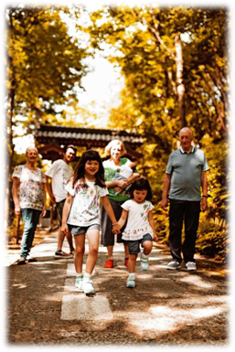
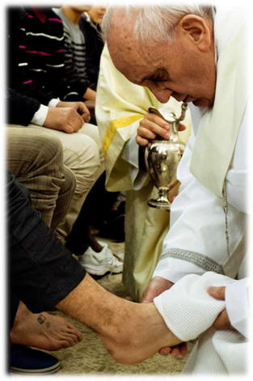

Los laicos
Son los bautizados que viven la fe en suscompromisos familiares, en su trabajo y comociudadanos. Son la mayor parte de la Iglesia. Enellos, Jesús se hace presente en la vida diaria de lasrelaciones familiares, laborales y sociales. Los laicostratan de ser signo de Jesús en el mundocotidiano.
Distintos modos de encarnar a Jesús
Pulsa en las palabras
No solo la Iglesia como institución hace presente a Jesús, sino que los creyentes que la forman, según seasu vocación, hacen presente algún aspecto concreto de su persona. En la Iglesia existen tres vocaciones:

La vida consagrada
Está formada por mujeres y hombres que dedicantoda su vida al seguimiento exclusivo de Jesús.Hacen votos de pobreza, castidad y obediencia paraimitar la vida que vivió Jesús. En ellos se hacepresente que Jesús entregó toda su vida a Dios ysu proyecto. Los consagrados recuerdan que Dios eslo más importante para las personas.
Distintos modos de encarnar a Jesús
Pulsa en las palabras
No solo la Iglesia como institución hace presente a Jesús, sino que los creyentes que la forman, según seasu vocación, hacen presente algún aspecto concreto de su persona. En la Iglesia existen tres vocaciones:
La jerarquía
Está formada por los obispos, sacerdotes ydiáconos. Sus componentes son personas quededican su vida al servicio de la comunidad y ahacer de mediadores entre Dios y los demás.Hacen presente a Jesús, que fue el gran mediadorentre Dios y las personas. Entre sus funcionesestán:
•predicar la Palabra.
•administrar los sacramentos.
•dirigir la comunidad.
Son la autoridad en la Iglesia ya que continúan lamisión de los apóstoles que dirigieron las primerascomunidades; son los sucesores de los apóstoles.
Distintos modos de encarnar a Jesús
Pulsa en las palabras
No solo la Iglesia como institución hace presente a Jesús, sino que los creyentes que la forman, según seasu vocación, hacen presente algún aspecto concreto de su persona. En la Iglesia existen tres vocaciones:
Pero la autoridad en la Iglesia no es poder sino servicio, comorecordó Jesús a los apóstoles: “Quien quiera ser el primero, quesea el último de todos y el servidor de todos” (Mc 9,35). Jesús esel modelo de la autoridad que se hace servicio, él lava los pies alos apóstoles: “Pues si yo, el Maestro y el Señor, os he lavado lospies, también vosotros debéis lavaros los pies unos a otros: os hedado ejemplo para que lo que yo he hecho con vosotros, vosotrostambién lo hagáis” (Jn 13,14-15).
En la Iglesia, la autoridad no es para mandar más, sino paraservir a los demás y ayudarlos a seguir a Jesús.
En la Iglesia, autoridad y servicio van unidos.
Autoridad y servicio

Presente en la caridad
Jesús dijo que él se hacía presente de manera especial en un grupo de personas: el de los necesitados ylos que sufren. En el evangelio según san Mateo, Jesús afirma que quien da de comer o de beber a los quetienen hambre y sed, acoge a los que vienen de fuera, viste al que está desnudo y visita al que estáenfermo o en la cárcel lo está haciendo con él mismo: “Cada vez que lo hicisteis con uno de estos, mishermanos más pequeños, conmigo lo hicisteis” (Mt 25,40).
En el ejercicio de la caridad, Jesús se hace presente doblemente: en el que la ejercita, ya que muestra aJesús que se ocupa del necesitado, y en el que la recibe, ya que es la manifestación privilegiada de Jesús,que se identifica con todos aquellos que sufren. El amor, que se hace caridad y servicio, sigue siendo elgran signo de la presencia de Jesús puesto que es la principal señal por la que se reconocerá a susseguidores (cf. Jn13,34-35).
Pulsa en la imagen
Presente en la caridad
Jesús dijo que él se hacía presente de manera especial en un grupo de personas: el de los necesitados ylos que sufren. En el evangelio según san Mateo, Jesús afirma que quien da de comer o de beber a los quetienen hambre y sed, acoge a los que vienen de fuera, viste al que está desnudo y visita al que estáenfermo o en la cárcel lo está haciendo con él mismo: “Cada vez que lo hicisteis con uno de estos, mishermanos más pequeños, conmigo lo hicisteis” (Mt 25,40).
En el ejercicio de la caridad, Jesús se hace presente doblemente: en el que la ejercita, ya que muestra aJesús que se ocupa del necesitado, y en el que la recibe, ya que es la manifestación privilegiada de Jesús,que se identifica con todos aquellos que sufren. El amor, que se hace caridad y servicio, sigue siendo elgran signo de la presencia de Jesús puesto que es la principal señal por la que se reconocerá a susseguidores (cf. Jn13,34-35).
Ayudar al prójimo que lo necesita es unmandato ético y religioso tan antiguo comola civilización humana. Pero la caridad esauténtica si es gratuita y no tiene intenciónde obtener algún beneficio de ese ejercicio.Por ello, Jesús recomendó:
Cuando hagas limosna, no lo vayastrompeteando por delante como hacen loshipócritas.
Mt 6,2
Presente en la caridad
Mostrar el amor que se tiene a Jesús es hacerlo realidad en el amor a los demás. Como recuerda la Primeracarta de Juan: “Si alguno dice: ‘Amo a Dios’, y aborrece a su hermano, es un mentiroso” (1 Jn 4,20).
Para el cristiano, el amor no es solo elsentimiento de querer a alguien, sino caridad,es decir, un amor que se hace servicio y buscael bien de los demás. Jesús, en la última cena,dejó el mayor ejemplo de este amor hechocaridad: comenzó lavando los pies, entregó sucuerpo como alimento y, finalmente, dio la vidaen la cruz.